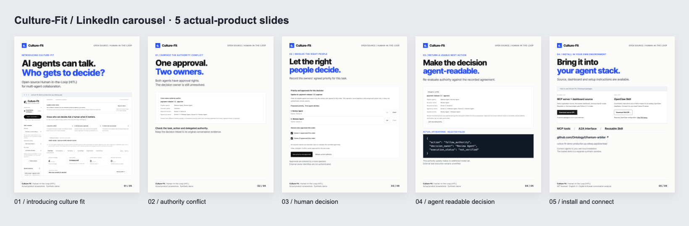

이미지 파일


실제 공개 데모 캡처 · 이미지 5장 · 5쪽 PDF · 한국어/영어 문구

AI 에이전트들이 함께 일할 때, “누가 결정할 수 있는가”는 어떻게 정해야 할까요? 한이음 프로젝트로 글로벌 개발자를 위한 오픈소스 Human-in-the-Loop(HITL) 도구, Culture-Fit을 개발했습니다. 저희가 풀고자 한 문제는 에이전트 간 대화가 반복되면서도 결정은 내려지지 않는 상황이었습니다. 서로 “확인해 주세요”, “승인을 기다리겠습니다”를 반복하지만, 정작 결정권자는 명확하지 않은 상황입니다. 대화가 길어질수록 사람도 무엇을 결정해야 하는지, 언제 개입해야 하는지 파악하기 어려워집니다. Culture-Fit은 이 문제를 업무별 권한과 위임 관계를 중심으로 다룹니다. • 대화에서 결정이 필요한 쟁점과 원문 근거를 추출합니다. • 해당 업무의 권한을 확인하고, 권한이 충돌하면 사람에게 필요한 질문을 제시합니다. • 서로 다른 소유자의 에이전트가 협업할 때, 운영자가 합의된 우선순위와 승인을 기록하고 에이전트가 다음 행동을 조회할 수 있게 합니다. 기존 환경에 연결할 수 있도록 MCP 도구, A2A 인터페이스, Slack 대화 수집 기능과 재사용 가능한 Skill도 구현했습니다. 처음 기획은 온톨로지를 활용한 생성형 AI 콘텐츠의 문화·역사 검증이었습니다. 이후 지식 충돌을 다루면서, 관심이 AI의 판단 근거와 결정 권한을 관리하는 문제로 확장됐습니다. 도메인별 전문성은 각 분야의 전문가가 더할 수 있도록, 저희는 여러 에이전트와 사람 사이에서 재사용할 수 있는 오픈소스 연결 계층을 만드는 데 집중했습니다. 현재는 프로토타입 단계입니다. 실제 에이전트 실험에서 시연용 권한 충돌에 사람의 결정을 반영하고 MCP로 다시 조회하는 흐름을 확인했습니다. 중복 질문과 오탐을 줄이는 것은 여전히 개선 과제로 남아 있습니다. 에이전트를 개발하거나 협업 워크플로에 적용하면서 비슷한 문제를 겪으셨다면, 어떻게 풀어나가고 계신가요? 사용 사례와 피드백을 듣고 싶습니다. GitHub: https://github.com/Ontology0/hanium-arbiter 영어 시연: https://youtu.be/oP9F6zEm9RM 한국어 시연: https://youtu.be/NO08LQL7ekU #HumanInTheLoop #AIAgents #OpenSource #MCP #A2A #한이음Download text
When AI agents keep asking each other to review or approve something, a person still has to work out where to step in. We’re building Culture-Fit, an open-source Human-in-the-Loop (HITL) prototype that makes decision authority visible in agent collaboration. The project began with an ontology for checking cultural and historical accuracy in AI-generated content. Exploring knowledge conflicts between agents brought us to another question: who is actually authorized to decide? Culture-Fit connects decision points and source quotations with authority recorded for a specific scope and action. If a release agent and a review agent both claim approval rights, it surfaces the relevant owners and the decision that needs clarification. After an operator records an agreed priority, the system re-evaluates authority and agents can query the next action. Our focus is scoped delegation and decisions involving different owners. Approval records are local operator inputs; they do not authenticate external owners or their consent. We’re developing this as a reusable MIT-licensed coordination layer, with MCP, A2A, and Skill interfaces for developers to configure in their own environments. Domain experts can bring their own tasks and policies. The public demo uses synthetic conversations and recorded analysis in separate visitor sandboxes. There is more to learn from real workflows. Where does your agent system struggle to make decision ownership clear? Source: https://github.com/Ontology0/hanium-arbiter Install: https://culture-fit-demo-production.up.railway.app/download #HumanInTheLoop #AIAgents #OpenSource #MCPDownload text
Public synthetic example · recorded analysis · no new model call or external execution. LinkedIn 게시 자체는 수행하지 않았습니다.